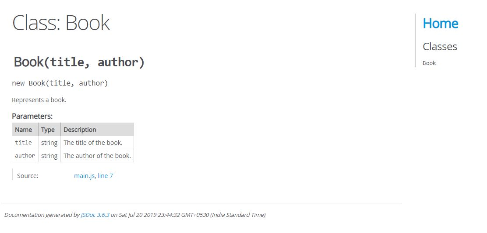

Installation
To install the jsdoc globally,npm install -g jsdoc --verbose
To install for development
npm install --save-dev jsdoc --verbose
Generate Documentation
Create a file 'Book.js' and write following code
/**
* Represents a book.
* @constructor
* @param {string} title - The title of the book.
* @param {string} author - The author of the book.
*/
function Book(title, author) {
}
To generate the Documentation, run following command
jsdoc book.js
This will create a Documentation inside 'out' folder
